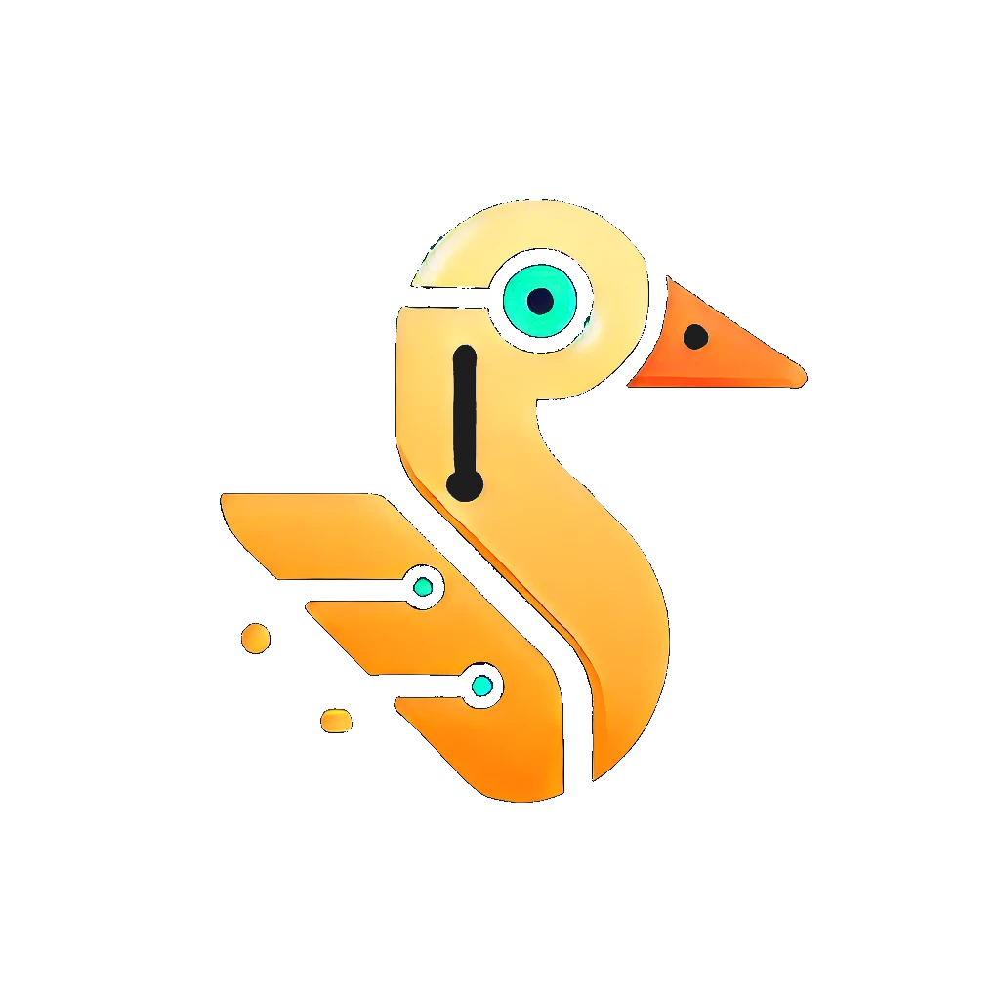

GooseByte
As AI continues to evolve, much of the public conversation focuses on productivity, automation, and replacing human tasks. Yet one of the most meaningful applications of AI may be something far simpler: helping people stay safe.
Consider the growing number of elderly individuals and people living alone. A fall, a stroke, a medical emergency, or even a call for help can go unnoticed for hours. In many cases, those lost hours are the difference between recovery and tragedy.
What if AI could act as a silent companion?
Not by sending personal data to the cloud. Not through invasive surveillance. But through AI models running entirely on-device, processing audio and video locally, and only raising an alert when intervention may be required.
Imagine a system capable of:
- Investigating AI-based detection of potential stroke indicators through audio-visual cues
- Identifying signs of distress or calls for help
- Monitoring for falls or unusual inactivity
- Acting as a security monitor by detecting suspicious activity around the home
- Alerting family members, caregivers, or emergency services when necessary
The technology to achieve much of this already exists. The challenge is bringing it together in a way that is affordable, reliable, privacy-preserving, and trusted by the people it is designed to protect.
For us, one of the most exciting aspects of AI is not what it can automate, but how it can augment care, independence, and human dignity.
As populations age and more people choose or need to live independently, AI-powered health and safety systems may become an important part of how we support vulnerable individuals while allowing them to maintain their independence.
The future of AI isn't only about making us more productive.
It may also be about making us safer.
If we can achieve this while keeping data private through on-device AI, we may be looking at a future where intelligent health and safety companions quietly protect the people who need them most.